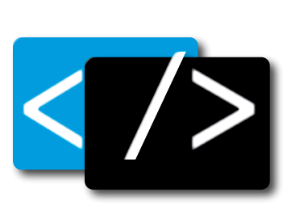

<mat-sidenav-container fullscreen>
    <mat-sidenav #sidenav mode="push" [ngStyle]="{width: '250px'}">

        <mat-toolbar>
            <span>Menú</span>
            <span class="spacer"></span>
            <!-- boton para cerrar el sidenav -->
            <button mat-icon-button (click)="sidenav.toggle()">
                <mat-icon>menu</mat-icon>
            </button>
        </mat-toolbar>

        <mat-nav-list>
            <mat-list-item 
            *ngFor="let item of sidebarItems" 
            [routerLink]="item.URL"
            (click)="sidenav.toggle()"> 

                <mat-icon matListItemIcon>{{item.icon}}</mat-icon>

                {{item.label}}

            </mat-list-item>
        </mat-nav-list>

    </mat-sidenav>


    <mat-toolbar color="primary" class="shadow-3 z-5">
        <!-- boton para abrir el side nav -->
        <button mat-button (click)="sidenav.toggle()">
            <mat-icon>menu</mat-icon><span>Menú</span>
        </button>
        <!-- espacio entre  el boton menu y el logout -->
        <span class="spacer"></span>
        
        <a class="flex gap-1" routerLink="/profile/home">

        <div class="flex-row">
            
        </div>
        
        <div class="flex-row hidden md:block">
            <h5>Felipe<strong>Ceballos</strong></h5>   
        </div>
        </a>
        

        <span class="spacer"></span>

        <button mat-button >
            <a href="mailto:pipevc98@gmail.com?subject=Desarrollo Web&body=Hola, estoy interesado en contactarme contigo">
                <mat-icon >mode_comment</mat-icon>
                HIRE <strong>ME</strong>
            </a>
        </button>
        

        <!-- Boton logout -->
        <!-- <button mat-button>
            <a href=""></a>
        </button>
 -->

    </mat-toolbar>

    <div class="container mt-2">

        <router-outlet></router-outlet>

    </div>
    
    
    <app-footer></app-footer>
</mat-sidenav-container>


